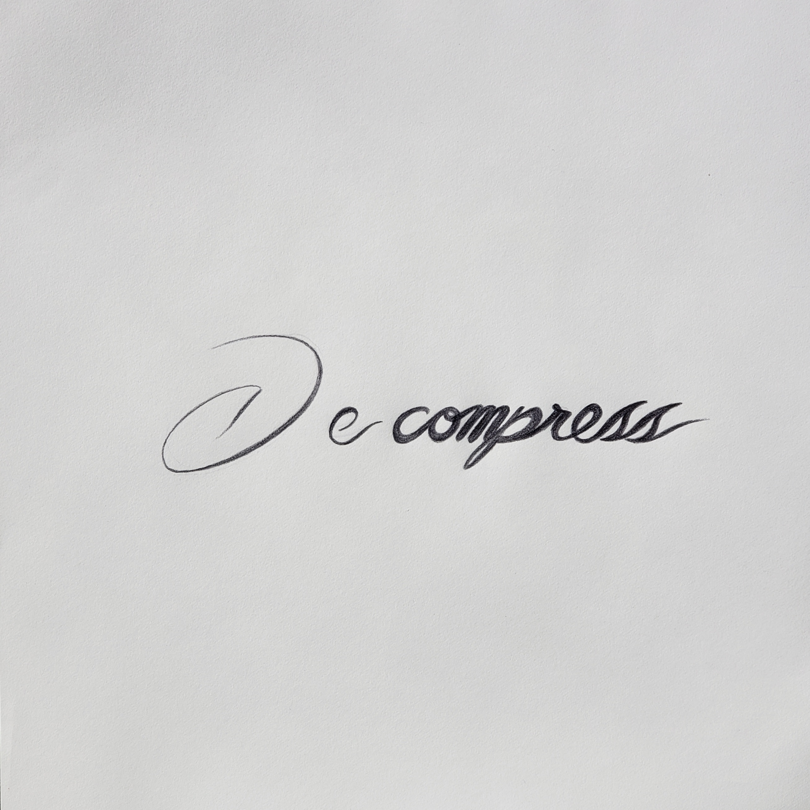

After a long period away from the open source 3D modeling software, I've finally gone back to learning Blender. With the help of Blender Guru's updated donut tutorial, I have started learning the latest version.
I had originally followed his first beginner tutorials and had come up with the following:
My first renders in Blender following the original Blender Guru beginner tutorial.
Looking back, I definitely needed to work more on the frosting and adding more light. The scene is a bit too dark in the first set, and a bit better in the last image.
Currently, I've made it through Level 1 of the updated beginner series and have produced the following:
Recent renders following the updated Blender Guru beginner tutorial.
Taking a second look, the modeling work could have used a bit more finesse, and the lighting is maybe a bit bright in some areas, but I think it is a much better attempt than the original set. Since the original renders, I've become more accustomed to using 3D software, so I was a bit more comfortable navigating around now than previously.
More progress renders will be posted as I complete each level in the series.
Posted: 2021-10-12
"Decompress" Sketch
Just wanted to share one of the pieces I did leading up to a school project. I liked the font, and it kind of reminded me a bit of a house sticker set. Feel free to send your thoughts on the piece, good or bad.

One of six concept pieces for a school project.
Posted: 2021-10-04
"New" Car
In the last month of summer leading up to school, I purchased a new car. Unfortunately, I was unable to bring it with due to not having the title in time and a couple other unfinished maintenance tasks. I hope to have it with me by the end of October. It's a 1986 Mercedes-Benz 300E with a 4-speed automatic, unfortunately, but it is rear-wheel drive, so that makes up for it a bit.
My 1986 Mercedes-Benz 300E at original owner's shop with flat tires.
Since that picture has been taken, I've replaced the rear shocks that were bad, put new tires and valve stems on, and got it to a running state. There were several other small tasks that were also done, but the last things that need addressing are a coolant flush and new belts and new hoses. The A/C needs troubleshooting as well, but we're heading into winter, so that's a project for the spring.
Once I get it, and as I complete other maintenance and mods, I'll post about it here.
Posted: 2021-10-02
Site Update (Oct 2021)
I've finally gotten the site to a good stopping point. For anyone who sees this page, feel free to send an email with any noticed bugs or other suggestions for the site.
Contrary to the initial mission of the site, I've moved on to using some Javascript. The site does function without it (albeit clunkily and redundantly) but it helps significantly with mobile and desktop navigation. The move came from my work on another webpage, angel-castaneda.com. There I plan to use EJS templates and a database to allow for a more scalable blog with posts on their own separate pages. Honestly, at this point I should just use a website builder, but where's the fun in that? I had originally envisioned using PHP here on my site, but I think that for the scale that I'm running at and the number of active pages that I have no server-side scripting should be needed. Maybe in several years if I grow this page significantly I will reconsider.
Other News
The "electronics review" page is still a consideration, but will definitely be a far off endeavor.
Since the start of writing class at school, I've definitely regained my interest in writing. I plan to update my other pages with some better text written like a normal person writes (at least that's the plan. I could mess that up again).
Detroit has been good so far. The train is conviniently across the street, so going home is fairly straightforward. Two-thirds of my classes are drawing based, and the other two are writing and model making, so I am enjoying myself. The work load is on par with what I had experienced last year at MSOE, but some say it's a bit high. Because there are two campuses, I'm able to get a decent bicycle ride in most days that I travel between campuses which is a change from walking only a block.
I'll probably check back in more regularly with updates, but until then happy Fall!
Posted: 2021-10-01
Site Maintenance
Notice: The site is currently undergoing maintenance and will likely be live while parts of the site are still broken. It should be back to normal by next week with improvements.
Posted: 2021-09-24
New Networking Hardware
Picked up a 50 port POE switch and two Dell dual 10Gb network cards from a swap meet. I don't have pictures of the network cards, but they're Dell model Y40PH. The switch is a Cisco SG200-50P and will be a good upgrade to my existing consumer switch, and the addition of POE will let me run cool IOT stuff or just experiment with it.
Cisco SG200-50P POE capable network switch
Posted: 2021-08-07
First Detroit Trip
Some pictures from my first time in Detroit for a campus tour:
Apple advertisementWindsor skylineOld houseOther old houseMichigan Labor Legacy Monument"The Fist" monument to Joe Louis
Posted: 2021-08-02
Acceptance Status Update
I meant to post this much earlier, but I have been accepted to CCS for the fall term. I'm actually on the way to Detroit to check out the campus as I write this post.
I'm pretty excited for the upcoming term and look forward to meeting new people there.
Posted: 2021-08-01
Vixen 21TD Motor Home
Saw this cool, old Vixen motor home while driving around today. This is the first time that I have heard of the brand or seen one of their vehicles.
Over the last month, I have come to the realization that computer science and software development are not for me. Programming as a hobby and homelab tinkering are still fun and a good challenge, but working as a developer maintaining crazy code bases or not being able to fix the old, horrible mistakes made in the previous server deployment as a sysadmin has become unapealing. Instead, I plan to pursue transportation and automotive design. I am much happier drawing, using CAD, and learning about digital art, so changing to an art school should allow me to pursue those skills while letting me to keep comupters as a hobby. Product design in general is something I enjoy and vehicles specifically are probably my favorite objects to work with, so a major in transportation design with a focus on autos makes the most sense at the moment to me.
Currently, I am applying to the College for Creative Studies (CCS) in Detroit, Michigan and will keep my acceptance status up to date here.
Posted: 2021-05-10 Edited: 2021-08-01
Sydney's Birthday!
I'd like to say happy birthday to my sister, Sydney! She's been an amazing sister and friend over the years. Although we don't agree on everything under the sun, we still try to be close with one another. Happy birthday!
Sydney blowing out candles on her birthday cake.Sydney riding the dirtbike.
Posted: 2021-04-27
SL 350 Project
I've been into designing motorcycles recently and have gained a bit more appreciation for "bobber" and "chopper" motorcycles.
There is a badly rusted Honda SL 350 with a seized engine at my house that I want to do something with. I figure it would be a decent "large-scale" project because the bike can't get much worse than it already is if something goes wrong.
In the concept sketch, I have the rear chopped and replaced by a custom swing arm with a mono shock, and the seat and bike are lowered a few inches. The wheels, frame, front steering and suspension, and the fuel tank are all stock. The handle bars might come from the XS project because I want a modern dirt bike bar on that instead, and they are just a straight bar with a slight pull-back.
TLDR: Seagate ST2000DMA08 drives contain/are the same as ST2000MD008 drives.
There may be a site that has already covered this topic, but I couldn't find it during my search, so I figured that I would post about it here.
So, I'm currently building up a NAS/remote storage system, and I needed some relatively inexpensive CMR drives to install in my server. I ended up finding these Seagate St2000DMA08 drives on BestBuy.com. That particular model number was not on this list of known SMR drives from TrueNAS, so I took a gamble and bought them. When I did, I neglected to check the numbers on the box. The box model was ST2000DMA08, but there was a "contains" label that showed that there was an ST2000DM008 drive inside which was on the list of SMR drives. I understand that there are business benefits from making a new model number for a retail store, but it would be nice if Best Buy disclosed this information on their product post. Looking back, the only place that there is a reference to the ST2000DM008 model number is in a picture from a user review.
I ended up returning them and swapping for these WD Purple WD20PURZ drives because they were the only 2TB CMR drives under $70 that I could find on Amazon or Best Buy (I have some gift cards). Hopefully they work well enough for bulk storage over the network. I'll post more about the installation as the parts come in.
Posted: 2021-04-12
Getting Back Into Watercolor
After about 7 years since my last watercolor project, I am trying to get back into painting in watercolor. I found a technique online for making deciduous trees, and these are my two practice attempts. The rightmost result is one that I am prouder of, but I still need a lot of work. Prepping the paper is also a skill I need to work on, as the warped paper made painting more difficult.
Mobile view has been improved to the point that I am happy. Some things, like the in-page navigation links, still need addressing, but I have a site-overhaul in mind, so I will not be fixing that on this current site iteration.
New site plans include the addition of client-side JavaScript and a new page layout that takes advantage of the added functionality. Server-side scripting will eventually happen, but I want to get client-side done first, as it has a more noticeable impact on the reader.
My computer reviews page is also on hold for the time being. School work and the new site overhaul are taking up most of my time at the moment, but I will have something posted in regard to that by the end of the month.
Posted: 2021-01-12
Computer Reviews
I am starting a computer/electronics thoughts page. My goal is to share my short and long-term experience with various products and hopefully help someone with a purchase decision. At the very least, the overviews could be useful as another archive of tech products as time goes on.
My first post will be on my main laptop, a Lenovo ThinkPad T460s from 2016. It has served me well, and since I have had the most time with it recently, I figure it will make a good starting point.
Posted: 2020-11-29
Pumpkin Carving
Carved and painted a pumpkin for the first time in a few years for Halloween.
Full size image. Pumpkin with "The Child" carved and painted into it. To quote a friend, "It's so cute!" -Ean Beckman
Posted: 2020-10-30 Edited: 2020-11-10
Some Drawings
I haven't been able to work on this site very much recently due to school. I have been drawing lately, and here are some pictures:
This blog is here to give updates and document progress on various projects. The subject may change over time, but this is the foundational purpose. There is not a planned release schedule, but I will try to put out at least two posts a month.


{kind=link}
{kind=link}